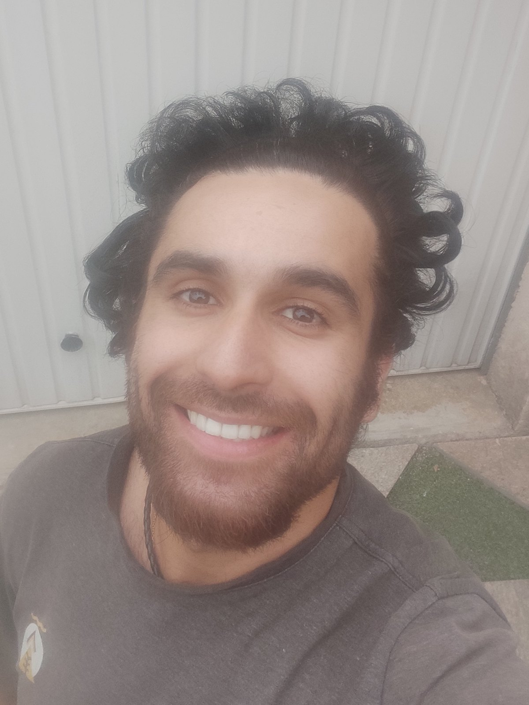

Qui vous accompagne
À propos
Croire en Soi n'est pas une méthode toute faite. C'est le projet d'une personne — et voici laquelle.

Qui vous accompagne
David Nakamura.
Croire en Soi, c'est avant tout une idée. Un jour, j'ai écrit sur une feuille blanche que ce que je souhaitais le plus, c'était de faire ce qui me plaisait vraiment. Aujourd'hui j'en vois les fruits, et je veux transmettre cette conviction : on peut réellement aspirer à la vie qu'on souhaite.
De mon parcours m'est venue l'idée d'allier le corps et l'esprit : un accompagnement par le mouvement, doublé d'un échange sur vos objectifs, vos aspirations et les thématiques du développement personnel qui vous parlent.
Je suis moi-même encore en apprentissage, et je le dis franchement. C'est aussi pour cela que la première séance est offerte : vous jugez sur pièce, sans rien avancer.
Échanger avec DavidLe chemin
Parcours
Je m'appelle David Nakamura.
Pratiquant d'arts martiaux depuis le plus jeune âge, j'ai grandi dans le sport — d'abord par la découverte, puis par passion. Je suis passé par l'aïkido, le tennis, le handball, le skateboard et bien d'autres disciplines, avant de trouver dans le kung-fu wushu une voie durable, jusqu'à la ceinture noire.
Ce parcours m'a mené vers une licence STAPS mention Activité Physique Adaptée, avec le badminton comme sport de prédilection. À la fin de mes études, je me suis épanoui pendant douze ans dans l'animation, d'abord comme animateur, puis comme directeur de centre de loisirs et de structures périscolaires.
Aujourd'hui, je rassemble tout cela dans le projet Croire en Soi. Ce que je souhaite transmettre à travers mon parcours : croire en soi, c'est possible — et ça se travaille.
Diplômes & qualifications
Formations
- 一Licence STAPS mention Activité Physique Adaptée
- 二BPJEPS mention Loisirs Tous Publics
- 三Ceinture noire 1er Duan Kung Fu Wushu
- 四Diplôme de surveillant de baignade